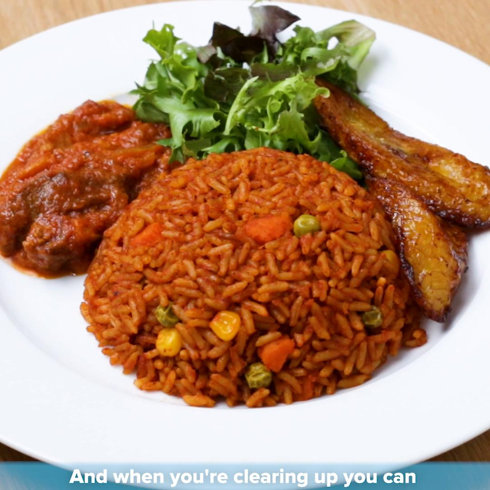

jollof

Ingredients
Please lets look closely at the following items used in the preparation of this special meal.
- Fish/Chichen/Meat
- Grinded Pepper
- Onion
- Oli
- Carrot
- Cabage
- Tomato Paste
- Salt
- Water
- Rice
Preparation Steps
- Wash all ingedients thoroughly with the exception of rice and oil thoroughly with water and place it in a sauce pan.
- Slice onion,cabage and carrot nicely into your separate bowls.
- Add the oil to sauce pan and put on fire.
- Add Fish/Chichen/Meat into sauce pan and allow to fry to taste
- Add onion, cabage and carrot and allow to fry to tast.
- Add tomato paste and pepper Note: pepper must be moderate.
- Add salt to taste and allow all to simmer for a While.
- Add Final quantity of water, rice and salt to taste just to suit your consumption in proportion to your ingredients.
- Allow to cook to the desired taste.